الشرحالبداية
نظرة سريعة
خمس دقائق تكفي: تثبّت، تربط حسابك، وتلصق أول رابط.
اللي تحتاجه
- الجهاز
- Windows 10 أو 11 (64-bit)
- الحساب
- حساب ChatGPT (حتى المجاني)، أو Claude Pro أو Max
- مفتاح API
- ما تحتاجه.
- المساحة
- حوالي 1.3 جيجا للمحركات (2.1 لو جهازك فيه كرت NVIDIA)، وتنزل لحالها أول مرة.
- كرت الشاشة
- اختياري. كرت NVIDIA يسرّع السمع، وبدونه يشتغل بالمعالج.
ثلاث خطوات
ثبّت زبدة
حمّل المثبّت وشغّله، وما يطلب صلاحيات مدير.
التثبيتاربط حسابك
تدخل من صفحة Claude أو ChatGPT الرسمية، بضغطة.
ربط حسابكالصق رابط
الصق رابط المقطع واضغط استخرج الزبدة.
استخراج الزبدة
الشرحالبداية
التثبيت
مثبّت واحد بدون صلاحيات مدير، ويجهّز الباقي لحاله.
الخطوات
حمّل المثبّت
حمّل Zubda-Setup.exe من زر التحميل أعلى الصفحة.
شغّله، وتخطّ تحذير ويندوز
ويندوز يعرض تحذير SmartScreen لأن زبدة ما عليه شهادة توقيع مدفوعة. اضغط مزيد من المعلومات ثم تشغيل على أي حال.
خلّه يجهّز
أول مرة ينزّل محرك التطبيق (حوالي 400 ميجا)، ويأخذ دقائق حسب سرعة الإنترنت.
افتح زبدة
من قائمة ابدأ أو من سطح المكتب.
أول تشغيل
أول ما تفتح زبدة، ينزّل محركين لحاله وتشوف تقدّمهم في الإعدادات:
- محرك السمع
- حوالي 0.8 جيجا، أو 1.6 لو جهازك فيه كرت NVIDIA. يسمع المقطع ويكتب كلامه.
- محرك يوتيوب
- ينزّل المقاطع من يوتيوب والمواقع الثانية.
لو تعطّل تنزيل محرك، تقدر تعيده من الإعدادات ← المحركات.
الشرحالبداية
ربط حسابك
زبدة ما تبيع شي ولا تطلب مفتاح API: تشتغل بحسابك أنت — وحساب ChatGPT المجاني يكفي.
أي حساب؟
| الحساب | الباقة | وش تثبّت زبدة |
|---|---|---|
 Claude Claude | Pro · Max | أداة Claude Code الرسمية |
 ChatGPT | Free · Go · Plus · Pro | أداة Codex الرسمية |
ما عندك اشتراك؟ اربط ChatGPT بحسابك المجاني: زبدة تشتغل كاملة على موديل Luna وما تدفع شي. ما عندك حساب أصلاً؟ سوّ واحد مجاني في chatgpt.com بإيميلك، بدون بطاقة. المجاني حدّه أصغر، وفي مقطع ربع ساعة طلّع 22 نقطة جوهرية مقابل 30 مع Claude Opus. أما Claude المجاني فما يشمل Claude Code، فيحتاج Pro أو أعلى.
تقدر تربط الاثنين وتبدّل بينهم من الإعدادات.
كيف يتم الربط
أول تشغيل يسألك بأي لغة تبي التطبيق والزبدة، ويعرّفك بزبدة في ثلاث شاشات، ثم يسألك سؤال واحد: «تربط حسابك؟». بعدها تشوف كل خطوة بوقتها:
صفحة الدخول ما انفتحت؟ اضغط افتحها مرة ثانية.
الدخول يتم في صفحة الشركة الرسمية، وكلمة سرّك ما تمر على زبدة.
بعد الربط
يطلع لك إيميل الحساب اللي انربط وباقته، مع سؤال: هو اللي تبغاه؟ تأكد منه، خصوصاً لو عندك أكثر من حساب. بعدها تختار الموديل، والافتراضي محدد لك من البداية.
بدّل الحساب أو اطلع منه
إيميل الحساب المربوط وباقته ظاهرين دائماً في الإعدادات ← الحساب. ربطت حساب غير اللي فيه اشتراكك؟ اضغط بدّل الحساب. صفحة الدخول تفتح على الحساب المفتوح في متصفحك، فلو تبغى غيره افتح chatgpt.com أو claude.ai وبدّل له هناك، ثم ارجع واضغط كمّل.
اطلع يطلّع زبدة فقط. حسابك في المتصفح، وبرامج مثل Claude Code أو Codex لو عندك، ما تتأثر، ومكتبتك تبقى كما هي.
بدون حساب
تقدر تستخدم زبدة بدون أي حساب، بجزء منها: تنزّل المقطع، وتكتب كل كلمة انقالت بوقتها، وتلقط كل مشهد تغيّر في الشاشة. كل هذا على جهازك. اللي يحتاج فهم يسويه الذكاء الاصطناعي في حسابك، فينقفل لين تربط:
- الزبدة والنقاط المهمة
يكتبها الذكاء الاصطناعي: هو اللي يفهم الكلام والصور، ويختار المهم ويرتّبه لك.
- يستاهل وقتك؟
الحكم يحتاج أحد فهم المقطع كله، مو بس سمعه.
- قراءة الشاشات
الكود والأرقام والروابط اللي ظهرت، يقرأها الذكاء الاصطناعي ويشرحها.
- اسأل المقطع ومكتبتك
الجواب يحتاج أحد يفهم سؤالك ويدوّر عليه في الكلام والمشاهد.
لما تربط حساب، افتح المقطع واضغط كمّل الزبدة الحين: يكمل من حيث وقف، بدون ما ينزّل المقطع أو يسمعه من جديد.
الموديل والسرعةالشرحالاستخدام
استخراج الزبدة
رابط واحد يكفي، والباقي على زبدة.
الصق الرابط
الصق الرابط في الخانة واضغط استخرج الزبدة، أو اضغط Ctrl V في أي مكان بالنافذة ويبدأ مباشرة.
نسخت رابط مقطع من مكان ثاني؟ أول ما ترجع لزبدة تسألك تلخّصه؟ وضغطة وحدة تكفي.
وش يقبل
- YouTube
- X
- TikTok
- Vimeo
- ومواقع أكثر
| تضيف | زبدة تسوي |
|---|---|
| رابط مقطع | تطلّع زبدته. |
| رابط قائمة تشغيل | تضيف كل مقاطعها. |
| رابط قناة | تضيف آخر عشرة مقاطع. |
| ملف فيديو أو صوت | اسحبه للنافذة، وتقرأه مثل أي مقطع. |
المقاطع اللي حللتها قبل تتخطاها، فما تتكرر.
المراحل
- تنزيل
- سماع ومشاهدة
- فهم
- كتابة الزبدة
- تدقيق
تشوف كل مرحلة وهي تشتغل، وتقدر تتنقل في التطبيق وهو يكمل في الخلفية.
الشرحالاستخدام
أكثر من مقطع
كل مقطع في تبويب، مثل المتصفح.
افتح تبويب
فوق النافذة شريط تبويبات. اضغط + لتبويب جديد، والصق فيه رابط من أي منصة.
- CtrlT
- تبويب جديد
- CtrlV
- الصق الرابط وابدأ
- CtrlW
- سكّر التبويب
- ضغطة العجلة
- سكّر التبويب
تسكير التبويب ما يوقف المقطع، وزبدته تنتظرك في المكتبة.
حالة كل تبويب
- يشتغلالدائرة تمتلي مع التقدّم.
- ينتظر دورهدائرة متقطعة، ويبدأ أول ما يفضى مكان.
- خلصعلامة صح، والزبدة جاهزة.
كم مقطع مع بعض
الافتراضي مقطعين مع بعض، والباقي ينتظر دوره. تقدر تخليه واحد أو ثلاثة من الإعدادات ← الموديل.
كل مقطع زيادة يشغّل جهازك أكثر شوي (المعالج والذاكرة وكرت الشاشة) ويصرف من حدّ اشتراكك أسرع. الخطوات الثقيلة على جهازك تمشي بالدور عشان ما يثقل.
الشرحالاستخدام
قراءة الزبدة
تقرير واحد يقول لك هل يستاهل المشاهدة، ووش فيه، ووين تلقاه.
شريط المقطع
فوق التقرير شريط فيه كل لقطات المقطع وصوته، والحشو مطوي في طيّات. مرّر الماوس عليه تشوف اللقطة والمعلومة عند أي ثانية، واضغط أي مكان وينقلك للنقطة.
وش في التقرير
- الحكم
يستاهل المشاهدة، أو جزء منه، أو تكفيك الزبدة. مع كثافة الفائدة من 10.
- الزبدة
المقطع كله في سطور.
- النقاط الجوهرية
كل نقطة بوقتها وكل فكرة في سطر، ثم الخطوات، والأدوات والروابط.
- ظهر على الشاشة وما انقال
كود وإعدادات ونصوص بلقطتها ونصّها الحرفي. اللقطات تظهر بس لما تضيف شي ما يوصله الكلام.
- شوفها بنفسك
اللحظات الوحيدة اللي الكلام ما يغني فيها عن الصورة.
- النص الكامل
بأوقاته، مع خانة بحث: اكتب كلمة ويطلع لك وين انقالت.
كل وقت تشوفه رابط يفتح المقطع الأصلي عند تلك الثانية. وجنب كل قسم زر نسخ.
مختصر أو كامل
فوق التقرير تختار، وزبدة تتذكر اختيارك:
الحكم والزبدة في سطور. للي يبي يقرر بسرعة.
كل شي: النقاط والخطوات واللقطات والنص الكامل.
الشرحالاستخدام
اسأل واحفظ
اسأل المقطع أو مكتبتك كلها، واحفظ الزبدة في ملف.
اسأل المقطع
آخر كل تقرير خانة اسأل المقطع. اسأل عن أي شي ما اتضح، ويجاوب من المقطع نفسه مع الدقيقة.
اسأل مكتبتك
في المكتبة خانة اسأل مكتبتك كلها. يجمع الجواب من كل مقاطعك، ويذكر كل معلومة من أي مقطع وعند أي وقت.
احفظها
من رأس التقرير اضغط Markdown أو PDF.
- وين ينحفظ
- في مجلد التنزيلات، داخل «Zubda»، مع لقطاته.
- Markdown
- ينقل كما هو لـ Notion و Obsidian.
- ملف جاهز للقراءة والإرسال.
الشرحالضبط
الموديل والسرعة
الافتراضي يكفي أغلب المقاطع. وهذا كيف تغيّره لو حبيت.
الموديل
في الإعدادات تشوف الموديلات اللي يعطيك اشتراكك، وعلى واحد منها «الافتراضي». في Claude الافتراضي Opus 5.5، وفيه Fable 5.1 للمقاطع الأصعب، وSonnet وHaiku أسرع وأخف على حدّك. جرّب:
Opus 5.5
فوق النافذة يبان دايماً أي موديل شغّال، وبأي مستوى تفكير.
مستوى التفكير
- خفيف
أسرع، وأخف على حدّك.
- الافتراضيمتوازن
يكفي أغلب المقاطع.
- عميق
فهم أدق، ووقت أطول، واستهلاك أكثر.
الوضع السريع
أسرع بحوالي الضعفين. ويختلف حسب حسابك:
| ChatGPT | يشتغل على طول، ويصرف من حدّك أسرع. |
| Claude | يشتغل بس إذا مفعّل «Extra usage» في حسابك على claude.ai، وهذا تدفعه لـ Anthropic فوق اشتراكك. إذا مو مفعّل، زبدة تكمل بالسرعة العادية وتقول لك. |
الشرحالضبط
الإعدادات
خمسة أقسام، وكل شي في مكانه.
الأقسام
- الحساب
اربط Claude أو ChatGPT، واختر المستخدم الآن. المؤشر أعلى النافذة يوضح كم باقي من حد اشتراكك ومتى يتجدد.
- اللغة
لغة التطبيق، ولغة الزبدة نفسها: مقطع إنجليزي تقدر تقرأ زبدته بالعربي.
- الموديل
الموديل، ومستوى التفكير، والوضع السريع، وكم مقطع يشتغل مع بعض.
- التحليل
استخدام ترجمة المقطع الجاهزة، والاحتفاظ بملف الفيديو.
- المحركات
محرك يوتيوب، ومحرك السمع، وتسريع كرت الشاشة. تتنزل لحالها، وتقدر تعيد أي واحد.
الشرحالضبط
التحديثات
التحديث يوصلك داخل التطبيق، وتثبّته بضغطة.
كيف يوصلك
يظهر زر تحديث جاهز
في أعلى النافذة، أول ما ينزل إصدار جديد.
تضغطه
يقرأ لك وش الجديد قبل ما يثبّت.
يثبّت ويعيد الفتح
في ثواني. مكتبتك وإعداداتك ما تتأثر.
موقّع ومجرّب
كل تحديث موقّع رقمياً بمفتاح زبدة، والتطبيق يتأكد من التوقيع وبصمة الملف قبل التثبيت. أي ملف ما يطابق ينرفض.
والتحديث ما يوصلك إلا بعد ما ينشر كاملاً ومجرّباً.
وش الجديد في كل إصدارالشرحمساعدة
الخصوصية
ما في سيرفر لزبدة، ولا حساب عندنا، ولا تتبّع.
وين يصير كل شي
- تنزيل المقطع
- السمع والمشاهدة
- مكتبتك، في %LOCALAPPDATA%\Zubda
- نص المقطع ولقطاته، عشان يفهمها
- عن طريق أداتهم الرسمية وحسابك أنت
إزالة زبدة
من إعدادات ويندوز ← التطبيقات ← Zubda ← إزالة. مكتبتك تبقى في مجلدها لو حبيت ترجع، واحذف المجلد إذا ما تبيها.
الشرحمساعدة
أسئلة شائعة
الأسئلة اللي تجينا أكثر، بجواب قصير.
ما عندي اشتراك، يشتغل؟
إيه. اربط حساب ChatGPT المجاني (أو سوّ واحد في chatgpt.com بإيميلك) وزبدة تشتغل كاملة على موديل Luna. الاشتراك يعطيك موديلات أقوى وحد أكبر، لكنه مو شرط.
ربطت الحساب الغلط، كيف أبدّل؟
من الإعدادات ← الحساب اضغط «بدّل الحساب». صفحة الدخول تفتح على الحساب المفتوح في متصفحك، فبدّل للحساب الصحيح في الموقع أول. إيميل الحساب وباقته ظاهرين دائماً، فتعرف أي حساب مربوط.
أقدر أستخدمها بدون أي حساب؟
إيه، بجزء منها: تنزّل المقطع وتكتب كل كلمة وتلقط المشاهد على جهازك. الزبدة نفسها والنقاط وسؤال المقطع تحتاج الذكاء الاصطناعي، فتنقفل لين تربط حساب. وحساب ChatGPT المجاني يكفي.
كم يستهلك من حد اشتراكي؟
يعتمد على طول المقطع. مقطع ربع ساعة يأخذ جزء صغير من حد الخمس ساعات في Claude Max. المؤشر أعلى النافذة يوريك الباقي دائماً.
ما عندي كرت NVIDIA، يشتغل؟
إيه. إذا للمقطع ترجمة جاهزة (أغلب يوتيوب) يقرأها مباشرة. وإذا ما له، يسمعه بالمعالج: أبطأ لكنه يشتغل.
كم ياخذ وقت؟
مقطع ربع ساعة ياخذ حوالي ثلاث دقائق مع Claude، حسب جهازك والموديل ومستوى التفكير. تقدر تفتح كذا تبويب وتكمل شغلك.
وصلت حد اشتراكي وأنا ألخّص؟
ما يضيع شي. زبدة توقف مؤقتاً، توريك متى يرجع الحد، وتكمل لحالها وقتها، بس خلّها مفتوحة. ولو سكّرت الجهاز، المقاطع اللي ما خلصت تكمل أول ما تفتح زبدة.
يشتغل على ماك أو جوال؟
حالياً ويندوز 10 و11 فقط.
المقاطع الخاصة أو المدفوعة؟
زبدة تقرأ المقاطع العامة. للمقاطع الخاصة نزّلها بطريقتك المشروعة واسحب الملف للنافذة.
كيف أزيله؟
من إعدادات ويندوز ← التطبيقات ← Zubda ← إزالة. مكتبتك تبقى في مجلدها لو حبيت ترجع؛ احذف المجلد إذا ما تبيها.
لقيت مشكلة
زبدة تكتب لك وش صار وأيش الخطوة الجاية على الشاشة. وإذا ما انحلت، بلّغ عنها هنا.
آخر تحديث 19 أكتوبر 2026لقيت خطأ في الشرح؟ بلّغ عنه